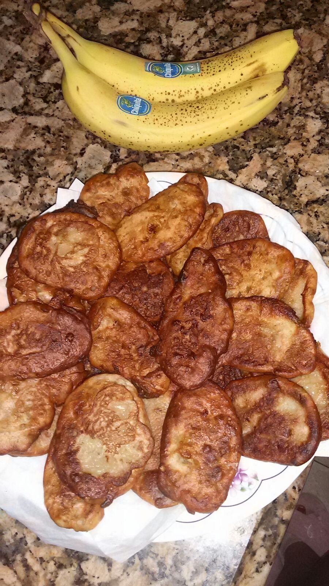

Banana Fritters
Banana Fritters Recipe
Everybody loves my banana fritters and everybody always wants me to make fritters for them.

Prep and Cook Time: 10 minutes
Ingredients:
- 4 bananas
- 1 tablespoon of brown sugar
- 1 teaspoon of nutmeg
- 1 beaten egg
- 1/2 a cup of milk
- 1 cup of flour
Directions:
- Peel and mash the bananas. Add sugar, nutmeg and one beaten egg. Add milk and flour.
- Optional: sprinkle with white sugar.
Serves 10